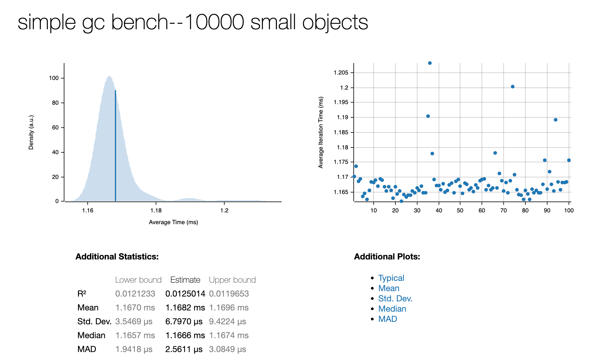
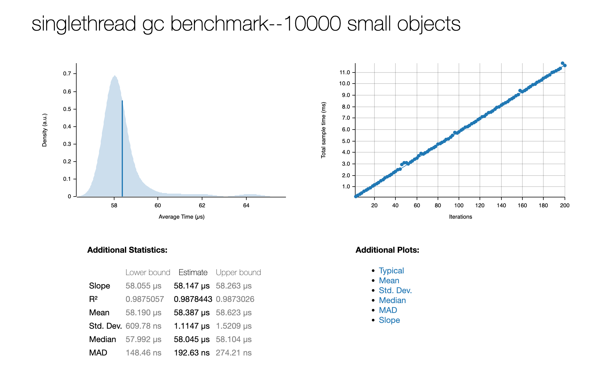

GC
！WIP：此页面描述的功能仍然在实验性阶段，可能有些细节没有实现完毕。
pivot-lang 是一门使用gc进行内存管理的语言。
pivot-lang 的gc目前是使用rust写的，采用一种叫做immix[[1]](https://www.cs.utexas.edu/users/speedway/DaCapo/papers/immix-pldi-2008.pdf)的mark region算法。
在以前的版本中，我们使用的是我们现在叫做simple gc的垃圾回收算法，他是一个简单的mark-sweep算法。
它由于性能问题和不支持多线程等原因最终被immix取代。不过我们仍然保留了它的代码，并且设置了一个编译开关（feature:simple_gc），可以在编译时手动选择使用该gc算法。
Simple GC
simple gc就和他的名字一样，代码十分简单（算法实现大概100行）。它没有自己的allocator，直接
使用C中的malloc和free进行内存分配和释放。
simple gc是一个保守gc算法(Conservative Garbage Collection)，它没有能力精确的分辨出哪些内存是指针，哪些不是。因此它会试图将所有的内存都当做指针来处理。
目前simple gc不建议在生产环境中使用，其代码保留下来是为了方便我们在未来的版本中进行性能对比，以及为未来用于教育目的做准备。
Immix GC
immix gc是一种mark region算法，它是一个精确的gc算法。但是请注意，它的精确建立在使用它 的项目提供的特殊支持之上。可以认为目前我们的immix gc实现 是为pivot-lang量身定制 的。pl编译器为了和我们的immix gc配合，会在编译时专门生成一些额外的代码，如果缺少这些代码，immix gc将无法正常工作。 所以虽然理论上我们可以将我们的immix gc用到其他项目中，这么做的效益很可能并不是很高-- 缺少编译器的支持，使用者将需要手动添加那些额外的代码。
immix gc的实现代码在这里。它是天生支持多线程使用的，但是我们的pivot-lang目前还不支持多线程。
Benchmark
我们对两种gc算法进行了一些基准测试，事实证明immix gc的回收性能要比simple gc 快近20倍。如果你对这些测试感兴趣，可以在项目根目录运行make bench查看immix的benchmark，或者运行make bench-simple-gc查看simple gc的benchmark。
下方分别是simple gc和immix gc的benchmark结果，测试于2023年1月，commit 62b5c52c01e8133f5300e33a0131a50ba0c8d0de

